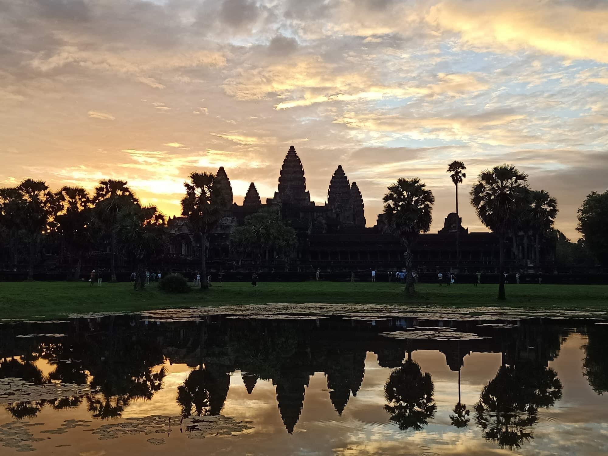

Begin The Journey
Echoes of an Empire
Travel back to the Khmer Empire and uncover the rulers, beliefs, and events that shaped Angkor Wat into one of the world's greatest monuments.
Journey through Cambodia's most iconic temple, discover its history, sacred architecture, ancient carvings, and practical travel guidance.
Our mission is to make the history, architecture, and cultural significance of Angkor Wat accessible through a modern digital experience.
By combining historical knowledge, visual storytelling, and practical travel resources, this guide encourages every visitor to appreciate one of humanity's greatest architectural achievements.


BEYOND THE GATES
Behind its silent stone walls lies more than a temple. Angkor Wat holds forgotten stories of kings, sacred beliefs, celestial towers, and carvings that have watched over Cambodia for centuries.
Begin at the western causeway and follow the path deeper into an ancient world—where every corridor, shadow, and stone detail invites you to discover what remains unseen.
Travel back to the Khmer Empire and uncover the rulers, beliefs, and events that shaped Angkor Wat into one of the world's greatest monuments.

From the five sacred towers to hidden galleries and detailed bas-reliefs, every structure reveals a deeper meaning.

See Angkor Wat through breathtaking views, sunrise reflections, ancient corridors, and detailed stone carvings captured in timeless images.
DIVE DEEPER INTO ANGKOR WAT
Discover its history, sacred architecture, and everything you need to plan an unforgettable visit.
Angkor Wat was built in the early 12th century by King Suryavarman II as a Hindu temple dedicated to Vishnu. It later became an important Buddhist site and remains a symbol of Cambodia today.
The temple was built mainly from sandstone, with laterite used in hidden structural areas. Its design includes a wide moat, long galleries, carved walls, and five central towers representing Mount Meru.
Angkor Wat is best explored early in the morning, when the weather is cooler and visitors can enjoy the famous sunrise view. Wear respectful clothing, bring water, and allow time to walk through its galleries and courtyards.


Ready to explore
Start with the visitor page for practical notes before expanding the site with maps, route cards, and booking ideas.